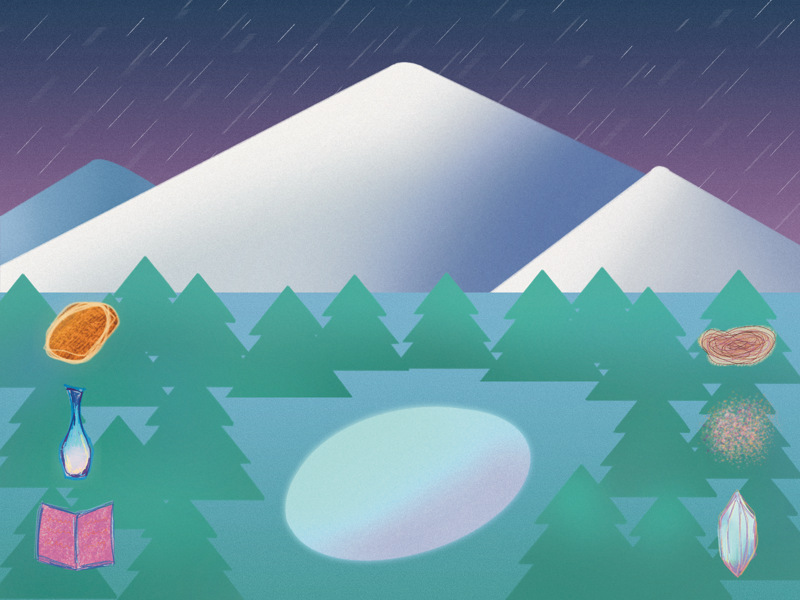
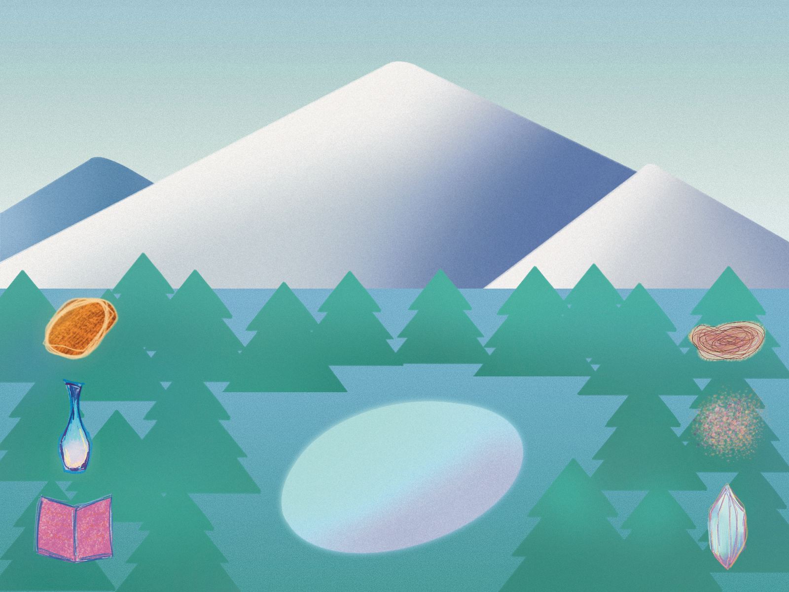
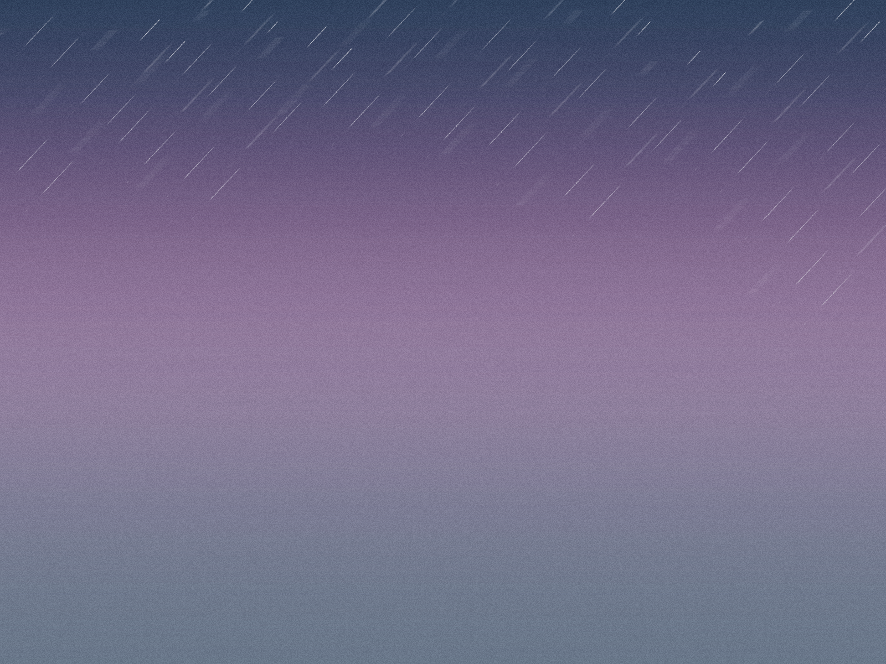
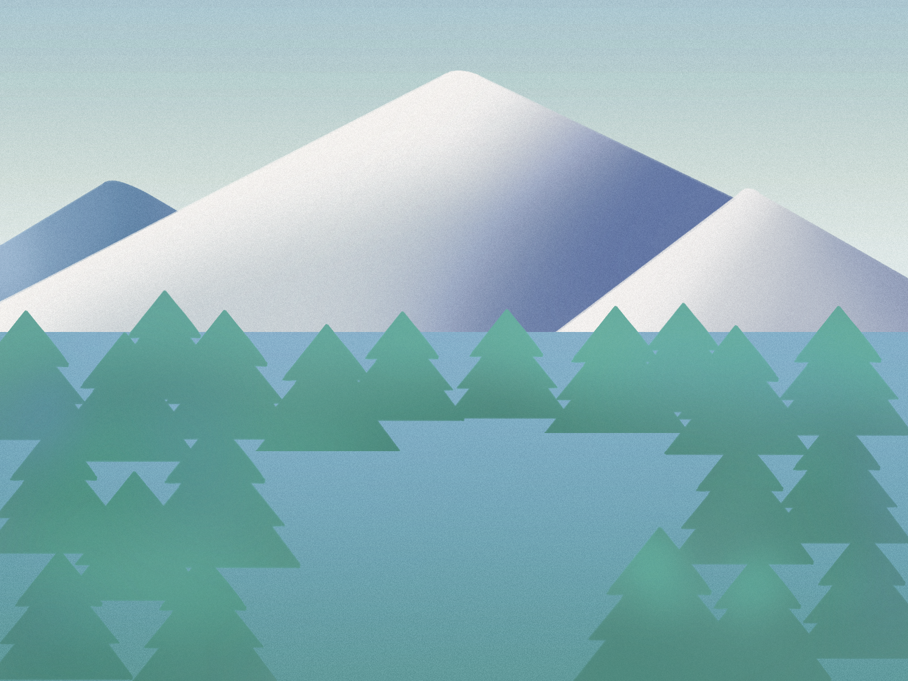

The Snow
Mountain
An interactive ritual system built in Java. The user takes the role of a shaman and performs ordered actions — placing ritual objects, responding to weather states — to calm a restless snow mountain.
Demo on YouTube ↗
The Design Challenge
The project explored how pacing and environmental feedback could shape interaction without relying on score-driven gameplay.
I designed the mountain as a responsive environment. Weather states, ritual objects, drag placement, and particle feedback all change based on the user's actions. Instead of explicit UI, system states were communicated through weather, particles, and environmental changes.



Iteration & Development
Assembly Logic
The first version used a collect-and-place structure. Users could gather ritual objects and place them onto the mountain, but the system felt static. The mountain did not respond clearly.
Weather as Feedback
I added five weather states and linked them to ritual conditions. This gave the system a clearer feedback loop: user actions now shifted the atmosphere rather than just completing a task. Weather became the main signal that the mountain was responding.
Effect & Experience
Correct object placement triggers particle effects and state changes. I reframed the ending away from win/loss logic. The experience became open-ended.




Weather, Objects, and Ritual Feedback
The system is built around two input patterns: ordered tapping to summon ritual objects, and drag placement to complete offerings. Weather changes the required sequence, so the user has to observe the environment before acting.
Hand-Drawn Visual System
Backgrounds, objects, and environmental elements were drawn in Procreate and imported into Java. This textural style creates a serene and immersive interface through its calm color palette and textured brushstrokes.
Weather-Based Logic
Each weather state changes the ritual condition. The correct object sequence depends on the current environment, turning weather into both atmosphere and rule system. The mountain only responds when the right action is taken under the right conditions.
Feedback Through Observation
Instead of heavy UI prompts, the system relies on state changes, startup instructions, and particle feedback. Users learn by testing actions and reading how the mountain responds — discovery replaces instruction.
Response & Revision
This is an experience system, it shouldn't have a win or lose state.
I removed the win/loss framing and treated completion as a state change rather than a victory condition.
Takeaways
Framing Changes Interaction Priorities
Reframing from game to experience system changed the design criteria. The interaction no longer needed challenge, score, or failure — it needed pacing, legible feedback, and a clear ritual loop.
Interaction Fidelity Shapes Atmosphere
Imprecise collision detection broke the ritual feeling. When placement felt unreliable, the experience became frustrating rather than meditative. Technical response becomes part of the atmosphere.
Prototype Hit Areas Earlier
I would test object hit areas before building the full visual system. Illustrated shapes are irregular, so clickable and draggable regions need careful tuning.
Expand the Gesture Language
Click and drag proved the system, but the ritual concept could support richer inputs — slow holds, traced paths, timed sequences. These would make the interaction feel more embodied and less like standard pointing and clicking.